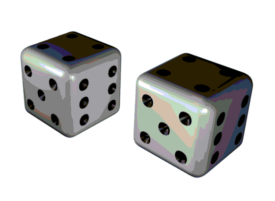

Tardeada Aleatoria

La Tardeada Aleatoria es un seminario dirigido a estudiantes (de todos los niveles) con interés en la teoría de la probabilidad. Su objetivo es ofrecer un espacio especializado para la exposición de tesis, avances o cualquier tema que sea del interés del estudiantado.
Las Tardeadas Aleatorias se llevarán a cabo durante el periodo de clases, en las semanas en que no tiene lugar el Seminario de Probabilidad y Procesos Estocásticos. Organizan Saraí Hernández-Torres
y Emiliano Alvarez Gil Leyva.
Semestre 2027-I
Salón Graciela Salicrup, Instituto de Matemáticas a las 16hrs.
19 de agosto - Pablo de la Fuente Parres Quintero (University of Victoria)
Título: Funciones Lipschitz aleatorias en árboles regulares.
Resumen: Una función 1-Lipschitz en una gráfica es una función de sus vértices a los enteros tal que difiere en a lo más 1 entre vértices vecinos. Si la gráfica es finita y fijamos el valor de algún vértice entonces el conjunto de estas funciones es finito y podemos elegir una uniformemente al azar. En esta plática nos enfocamos en árboles regulares en los que fijamos el valor de las hojas. Analizamos el comportamiento asintótico del valor en la raíz del árbol cuando la altura tiende a infinito. La estructura recursiva del árbol permite transformar este análisis al de analizar puntos fijos de un operador.
2 de septiembre - Saraí Hernández-Torres (Instituto de Matemáticas, UNAM)
Título: Por anunciar.
Resumen: Por anunciar.
21 de octubre - Por anunciar
Título: Por anunciar.
Resumen: Por anunciar.
4 de noviembre - Por anunciar
Título: Por anunciar.
Resumen: Por anunciar.
18 de noviembre - Por anunciar
Título: Por anunciar.
Resumen: Por anunciar.